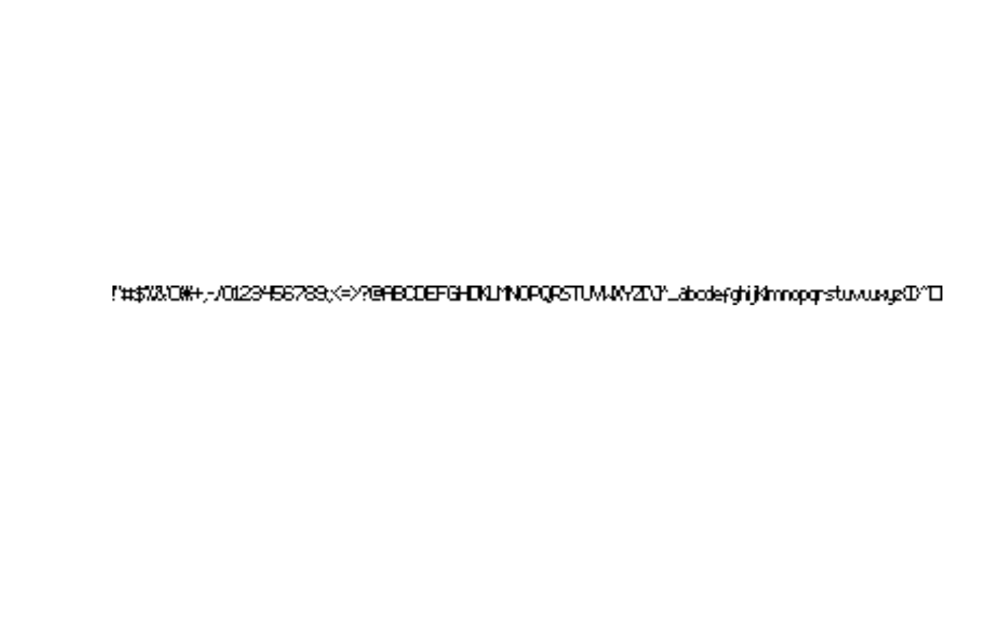
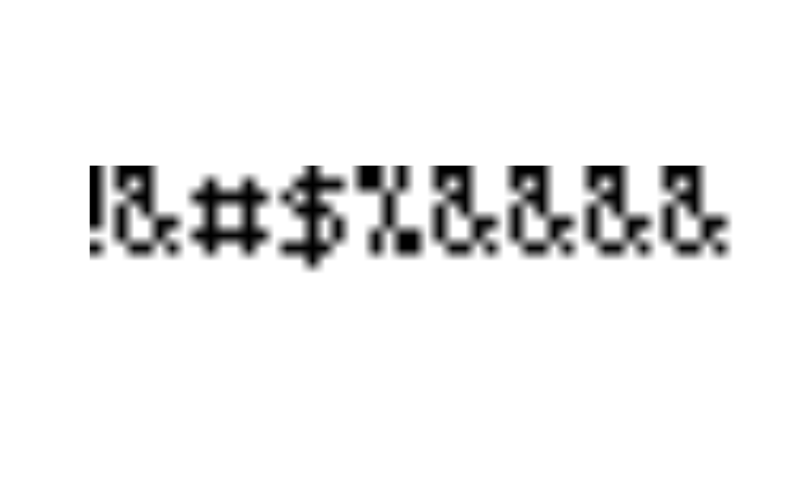

Convert a two-coloured grDevices::as.raster() image into
an AmigaBitmapFont() class object.
Usage
rasterToAmigaBitmapFont(
x,
glyphs,
default_glyph,
baseline,
glyph_width,
glyph_space,
glyph_kern,
palette,
...
)Arguments
- x
A
raster(see grDevices package) object composed of two colours only. Make sure that all glyphs (graphical representation of characters) are next to eachother on a single line. The height of this raster (in pixels) is taken automatically as font height.- glyphs
Specify which glyphs are included in the image
xfrom left to right. It can be specified in one of the following ways:A single
characterstring, where the length of the string (nchar) equals the number of displayed glyphs inx.A
vectorofnumericASCII codes. The length of thevectorshould equal the number of displayed glyphs inx.A
listof eithercharacterstrings orvectorofnumerics. The length of thelistshould equal the number of displayed glyphs inx. Each element can represent multiple characters, meaning that the nth element of the list uses the nth glyph shown inxto represent all the characters included in that element.Note that Amiga bitmap fonts represent ASCII characters and may not include all special characters or symbols.
- default_glyph
A single
characteror ASCII code (numeric) that should be used by default. This means that all characters that are not specified byglyphswill be represented by thisdefault_glyph.default_glyphshould be included inglyphs.- baseline
The baseline of the font, specified in number of pixels from the top (
numeric). Should be a whole number between 0 and the font height (height ofx) minus 1.- glyph_width
A
numericvectorwith the same number of elements or characters as used forglyphs. It specifies the width in pixels for each glyph reserved in the raster imagex. They should be whole numbers greater or equal to 0.- glyph_space
A
numericvectorwith the same number of elements or characters as used forglyphs. It specifies the width in pixels for each glyph that should be used when formatting. text. Note that these values can be smaller or larger than the values specified forglyph_width. They should be whole numbers greater or equal to 0.- glyph_kern
Note that in Amiga bitmap fonts not the formal definition from typography is used for kerning. Here, kerning is used as the number of pixels the cursor should be moved forward or backward after typesetting a character. It should be a
numericvectorwith the same number of elements or characters as used forglyphs. It can hold both positive and negative values.- palette
A
vectorof two colours. Both colours should be inx. The first colour is used as background colour, the second as foreground colour.When missing, it will be checked whether
xhas a palette as attribute, and uses that. If that attribute is also missing, the palette will be guessed fromx, where the most frequently occurring colour is assumed to be the background colour.- ...
Currently ignored.
Value
Returns a AmigaBitmapFont() class object based on x.
Details
Create an AmigaBitmapFont() class object by providing
a two-coloured raster image and specifying which characters are
depicted by the image.
See also
Other AmigaBitmapFont.operations:
AmigaBitmapFont,
availableFontSizes(),
c(),
fontName(),
font_example,
getAmigaBitmapFont(),
rawToAmigaBitmapFontSet(),
rawToAmigaBitmapFont(),
read.AmigaBitmapFontSet(),
read.AmigaBitmapFont(),
write.AmigaBitmapFont()
Other raster.operations:
AmigaBitmapFont,
as.raster.AmigaBasicShape(),
bitmapToRaster(),
dither(),
index.colours(),
rasterToAmigaBasicShape(),
rasterToBitmap(),
rasterToHWSprite(),
rasterToIFF()
Examples
data("font_example")
## make a raster that we can use to create a bitmap font
font9.rast <- as.raster(getAmigaBitmapFont(font_example, 9))
## note the glyphs and the order in which they are included in
## the raster image:
plot(font9.rast)

## let's build a simple font, using only the first few glyphs
## in the raster:
font9 <- rasterToAmigaBitmapFont(
## 'x' needs the raster image:
x = font9.rast,
## 'glyphs' are the graphical representation of the characters
## that we will include in our font. We will only use the
## first 7 characters in the raster image:
glyphs = " !\"#$%&",
## We will use the '&' glyph to represent all characters that
## are not specified in the font:
default_glyph = "&",
## The raster image is 9 pixels tall, as will be the font.
## Let's use 7 as the base (it needs to be less than the height)
baseline = 7,
## Let's define the width in pixels for each of the 7
## characters. This is their width in the raster image:
glyph_width = c(0, 1, 3, 6, 5, 5, 5),
## Let's define the space the character should take in pixels
## when it is used to format text:
glyph_space = c(4, 2, 4, 7, 6, 6, 6),
## the raster uses white as background colour and black as
## foreground:
palette = c("white", "black")
)
## note that for all characters that are not specified,
## the default glyph ('&') is used:
plot(font9, text = "!@#$%ABCD")

## Let's take a subset from the font's bitmap (rasteer):
font9abc.rast <- font9.rast[,263:282]
## as you can see this bitmap only contains the lowercase
## characters 'a', 'b', 'c', 'd' and 'e':
plot(font9abc.rast)
font9.abc <- rasterToAmigaBitmapFont(
x = font9abc.rast,
## Each glyph in the image can be represented by a single
## element in a list. By specifying multiple characters in
## each element, you can recycle a glyph to represent different
## characters. So in this case, the glyph 'a' is used for
## all the accented variants of the character 'a'.
glyphs = list("a\ue0\ue1\ue2\ue3\ue4\ue5",
"b",
"c\ua2\ue7",
"d",
"e\ue8\ue9\uea\ueb"),
default_glyph = "c", ## 'c' is used as default glyph for all other characters
baseline = 7,
glyph_width = c(4, 4, 4, 4, 4),
glyph_space = c(5, 5, 5, 5, 5),
palette = c("white", "black")
)
## see what happens when you format text using the font we just created:
plot(font9.abc, text = "a\uE0\uE1\uE2\uE3\uE4\uE5\uA2\uE7\uE8\uE9\uEA\uEB, foo bar")